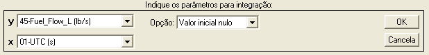
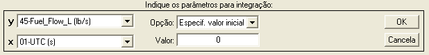
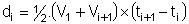
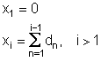

|
Menu Funções |
|
Integração
Numérica
Essa função
permite integrar numericamente um parâmetro em
função do tempo.
Clique no menu “Funções ►
Integração numérica” ou clique no botão na
Barra de Ferramentas.
A Caixa de
Diálogo solicitará que o usuário indique os parâmetros
para a operação:


● No campo
“y.”, indique o parâmetro que deseja
integrar. O gráfico será atualizado conforme a seleção.
● No campo “x”,
indique um parâmetro de tempo adequado
para integração (monotônico crescente e sem pontos inválidos). Para
integrar
numericamente com espaçamento unitário, selecione o parâmetro “No.
OBS.” como
tempo. O gráfico será atualizado conforme a seleção.
● No campo
“Opção”, indique a opção desejada para o
valor de referência da integração. As opções são:
-
Valor inicial
nulo;
-
Valor médio
nulo;
-
Valor final
nulo; e
-
Especificar
valor inicial.
● Caso a
seleção do campo “Opção” seja “Especificar
valor inicial”, o campo “Valor” será habilitado. Especifique
numericamente o
valor inicial da integração.
|
Nota: Para a
correta integração, a unidade do parâmetro integrado deve ser
compatível com a unidade de tempo (por exemplo, velocidade em metros
por segundo e tempo em segundos). |
|
Nota: A unidade
resultante da integração será compatível com a unidade do parâmetro
integrado (por exemplo, velocidade em metros por
segundo resulta em deslocamento em metros). |
Ao pressionar
“OK”, o R_DAT analisará os
parâmetros “y” e “t”.
- Caso o tempo não
seja adequado, a operação não poderá ser realizada.
- Caso o parâmetro y
contenha pontos inválidos (NaN),
o R_DAT solicitará que o usuário informe como proceder a integração:
As opções são:
|
Opção |
Descrição |
|
Interpolar |
Interpola
linearmente os pontos inválidos e prossegue a integração. |
|
Repetir |
Repete o ponto
válido anterior e prossegue a integração. |
|
Zerar |
Atribui zero
aos pontos inválidos e prossegue a integração. |
|
Botão [X] |
Cancela a
operação. |
Ao prosseguir
na operação, o R_DAT realizará a integração e
apresentará temporariamente o resultado no gráfico principal. Para
confirmar,
dê um nome adequado ao novo parâmetro na Caixa de Diálogo e clique
“OK”. Para
cancelar e descartar o novo parâmetro, clique “Cancela”.

Após definir o
nome e pressionar “OK”, o novo parâmetro será
acrescentado às matrizes de trabalho antes do parâmetro “No.OBS.”.
Lógica de Operação
Dado um par de
parâmetros y e t, a integral numérica de y
com respeito a t será obtida pelo método trapezoidal, ou seja, pela
soma
cumulativa das áreas compreendidas sob a curva y ×
t, iniciando em zero.
O exemplo
abaixo ilustra uma
integração numérica de velocidade, fornecendo deslocamento “x”:



Após a
integração, o R_DAT aplicará uma correção de offset
conforme a seleção do campo
“Opção”.
|
Nota: Parâmetros
com escala cíclica, como ângulos de Euler,
podem ser incorretamente integrados entre observações que apresentam
descontinuidade (por exemplo, proa acima de 360° volta para o início da
escala). Para evitar esse efeito, os parâmetros devem ser alterados
para escala contínua (função “Alterar
intervalo circular”) antes da integração. |
|
|
Declinação magnética |
Diferenciação
numérica |
|